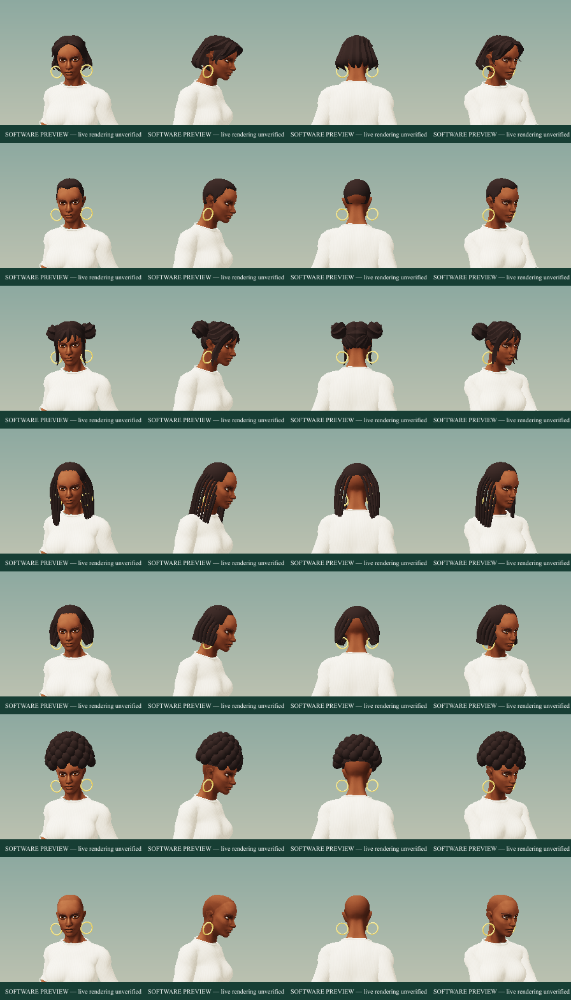
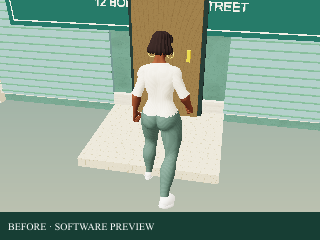
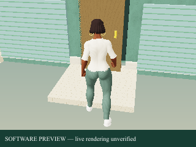
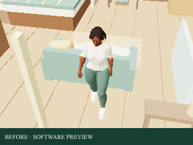
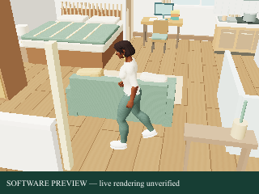
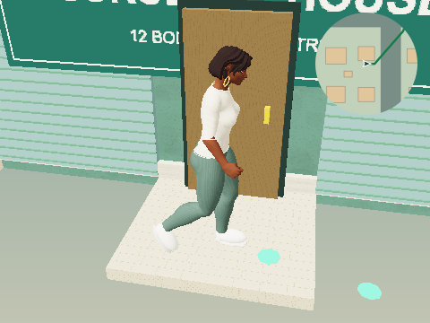
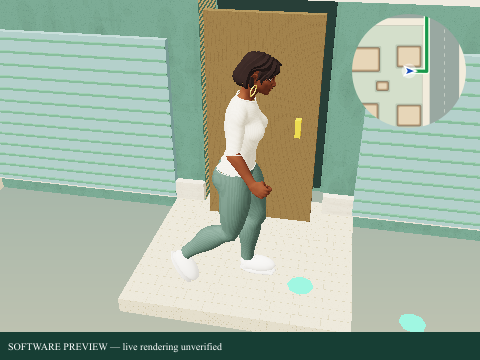

24 OCTOBER 2026 · FOCUSED CORRECTIONS
Character, home, doorway and navigation review
The confirmed hair shell material defect is fixed. Complete hair disappearance was not reproduced live. Test passes do not establish owner visual approval.
Hair during movement
Representative bob while walking
Every selectable hairstyle: idle, walk, turn, cooking
Rows: bob, fade, bun, braids, locs, afro, bald. Columns: idle, walking, turning, cooking.

Apartment framing and construction
Close follow · landscape
Whole apartment · landscape
Portrait comparisons
Close follow · portrait
Whole apartment · portrait
A whole room remains width-limited in portrait. Close follow is the normal interior view.
Complete entry
Step through software samples. This is not a gameplay recording.
BEFORE
AFTER
Complete exit
Step through software samples. This is not a gameplay recording.
BEFORE
AFTER
Entry/exit samples: approach, alignment, opening, crossing, covered switch, continued movement, closure. The last safe saved position is retained until the crossing completes.
Follow the route to Dispatch
Step through software samples. This is not a gameplay recording.
BEFORE
AFTER
Sample 3 deliberately deviates and reroutes; sample 6 reaches the Dispatch entrance. Minimap overlays use actual route/facing data; they are not captured browser UI.
Secondary city map
World layout and entrance pins
H Home · D Dispatch · S Shop · L Library · C Career hub · A Arcade · F Food. Existing cross-shaped street intersections remain the actual world geometry.
Reference limits and verification
Navigation references rechecked: 1001988127 at 00:29.15/00:51.65; 1001988234 at 00:28.90/00:32.15/00:35.15. None clearly demonstrates the complete requested route behavior; the written requirement governs.
All nine checks pass. Coverage includes 112 character combinations, 2,688 poses, 14 doorway timelines, 49 routes, interrupted-transition saves, activities, delivery and saved customisation.
Media coverage audit · Recoverable checkpoint
Play the local candidate with npm start, then open the separate apartment review. Main story saves are retained. No purchase or deployment was made.